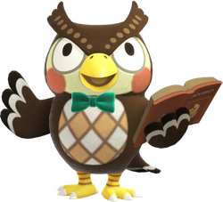

1. 성별 : 남자
2. 생일 : 9월 24일
3. 종족 : 부엉이
4. 가족 : 여동생 부옥
5. 데뷔작 : 동물의 숲 +
동물의 숲부터 쭉 등장해온 박물관을 운영하는 부엉이. 24시간 운영되는 박물관이지만 부엉 본인은 야행성 동물을
모티브로 해서 인지 낮 시간대(A.M. 6:00 ~ P.M. 6:00)[10]에는 꾸벅꾸벅 졸고 있다. 말을 걸면 바로 깨어나서 업무를 보기
때문에 플레이에 지장은 없다. 볼일을 마치고 잠시 놔두면 플레이어가 보고 있어도 다시 잠들어버린다. 반대로 밤에는 쌩쌩하게
깨서 책을 읽는 등 계속 박물관을 지키고 있다. 기증품을 주면 이에 대한 설명을 잡담 형식으로 하는데 기증품 별로 반응이 각기 다르다.
자신의 먹잇감인 물고기는 설명이 긴데 의외로 쓸모 있는 정보가 많다. 반대로 곤충은 무서워하는데 보자마자 기겁을 하고, 대부분 징그럽다는
반응을 보인다. 그래도 곤충에 대해서도 박식하지만 결국에는 어떤 곤충이든 소름끼친다는 결론을 내린다. 초기작의 경우 화석 감별법을 몰랐는데
놀동숲에서부터는 TV 프로그램을 통해 독학을 해 자격증을 땄다고 한다. 물고기 만큼이나 화석을 좋아하는데 특히 모동숲에서는 화석을 여러 개 감별할 때
전부 중복 화석이면 사고 싶다고 말할 정도. 이 수다 떠는 성격은 튀동숲에서 없어진 적이 있는데 여러 편의 개편과 더불어 편해졌다는 사람도
있지만 부엉의 수다를 그리워하는 사람들도 많았다. 그래서인지 모동숲에서 설명을 들을지 안 들을지 선택할 수 있게 되었다. 여러 작품이 나오면서
언급되는 부엉의 성격을 보면 정말 부엉이가사람이 착하다고 자주 언급된다. 대표적으로 놀동숲의 박물관 지하에 있는 카페 부터가 부엉이 직접
자리를 내준 것이며, 튀동숲에선 카페의 공공사업 신청도 부엉이 한다. 한편, 여욱에게 사기를 당할뻔한 것을 너굴이 막아줬다는 언급도 있으며
이 때문인지 모동숲에서 너굴과 오랜 친구 사이라고 한다. 곤충을 무서워하는 성격을 고치려고 부옥이가 극복 훈련이란걸 하게 한 적이 있는데
결과가 영 안 좋았던 듯하다. 고옥이가 언급하기론, 밤에 갑자기 부엉이 들어와서 곤충 이름을 반복하며 말하다가 민망했는지 옷을 고르는 척 했는데
고르는 척 한 코너가 하필이면 여자 옷 코너였다는 얘기가 있다. 이후 부옥의 선물로 큰 리본을 살 때 고옥이가 그 모습을 보고 마음을 풀게 되는
계기가 되었다고 한다. 부엉이가 처음 박물관 관리를 맡게 된 계기는 어떤 마을에 박물관이 새로 생겼는데 박물관장을 할 사람이 없어
얼떨결에 자신이 맡게 된 것이라고 한다.
< 이전 페이지로 돌아가기